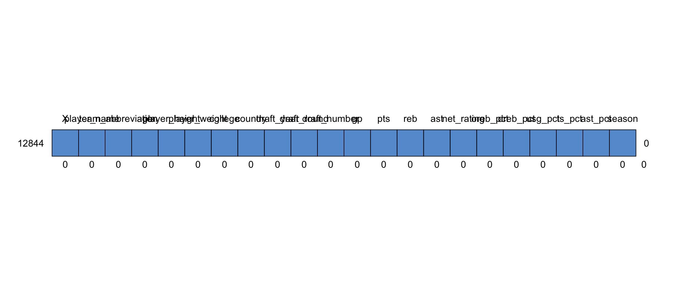
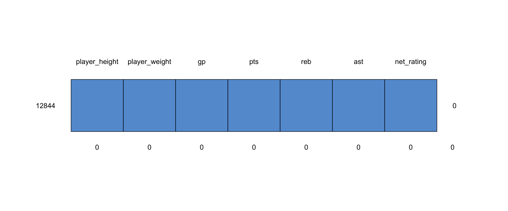
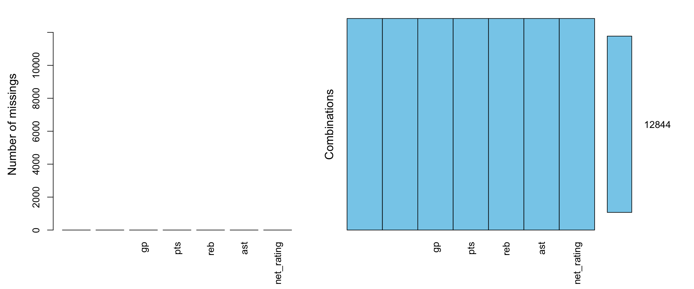

Visualizing NBA
2023-10-21
1 NBA Data
The data set contains all the players’ performance data from season 1996-97 to season 2022-23.
1.1 Data Type
Here’s a brief explanation of some important variable in the analysis:
- player_height: player’s height in the given season.
- player_weight: player’s weight in the given season.
- gp: total games a player has played in the given season.
- pts: player’s average points per game.
- reb: player’s average rebound per game.
- ast: player’s average assist per game.
- net_rating: the team’s point differential per 100 possessions while a player is on court.
- oreb_pct: offensive rebound percentage - an estimate of the percentage of available offensive rebounds a player grabbed.
- dreb_pct: defensive rebound percentage - an estimate of the percentage of available defensive rebounds a player grabbed.
- usg_pct: usage percentage - an estimate of the percentage of team plays used by a player.
- ts_pct: true shooting percentage - a measure of shooting efficiency that takes into account field goals, 3-point field goals, and free throws.
- ast_pct: assist percentage - an estimate of the percentage of teammate field goals a player assisted.
- season: season - the NBA season for which these stats apply.
1.2 Preliminary Cleaning
1.2.1 Initial Missing Data Imputation
## [1] 0## /\ /\
## { `---' }
## { O O }
## ==> V <== No need for mice. This data set is completely observed.
## \ \|/ /
## `-----'
## X player_name team_abbreviation age player_height player_weight college
## 12844 1 1 1 1 1 1 1
## 0 0 0 0 0 0 0
## country draft_year draft_round draft_number gp pts reb ast net_rating
## 12844 1 1 1 1 1 1 1 1 1
## 0 0 0 0 0 0 0 0 0
## oreb_pct dreb_pct usg_pct ts_pct ast_pct season
## 12844 1 1 1 1 1 1 0
## 0 0 0 0 0 0 0## /\ /\
## { `---' }
## { O O }
## ==> V <== No need for mice. This data set is completely observed.
## \ \|/ /
## `-----'
## player_height player_weight gp pts reb ast net_rating
## 12844 1 1 1 1 1 1 1 0
## 0 0 0 0 0 0 0 0aggr(subset(nba, select = c(player_height,
player_weight, gp, pts, reb, ast, net_rating)),
prop = F, numbers = TRUE)
1.2.2 Data Cleaning
identify outlier exists in the net_rating, with the 300 as the max and -250 as the min.
## X player_name team_abbreviation age
## Min. : 0 Length:12844 Length:12844 Min. :18.00
## 1st Qu.: 3211 Class :character Class :character 1st Qu.:24.00
## Median : 6422 Mode :character Mode :character Median :26.00
## Mean : 6422 Mean :27.05
## 3rd Qu.: 9632 3rd Qu.:30.00
## Max. :12843 Max. :44.00
## player_height player_weight college country
## Min. :160.0 Min. : 60.33 Length:12844 Length:12844
## 1st Qu.:193.0 1st Qu.: 90.72 Class :character Class :character
## Median :200.7 Median : 99.79 Mode :character Mode :character
## Mean :200.6 Mean :100.26
## 3rd Qu.:208.3 3rd Qu.:108.86
## Max. :231.1 Max. :163.29
## draft_year draft_round draft_number gp
## Length:12844 Length:12844 Length:12844 Min. : 1.00
## Class :character Class :character Class :character 1st Qu.:31.00
## Mode :character Mode :character Mode :character Median :57.00
## Mean :51.15
## 3rd Qu.:73.00
## Max. :85.00
## pts reb ast net_rating
## Min. : 0.000 Min. : 0.000 Min. : 0.000 Min. :-250.000
## 1st Qu.: 3.600 1st Qu.: 1.800 1st Qu.: 0.600 1st Qu.: -6.400
## Median : 6.700 Median : 3.000 Median : 1.200 Median : -1.300
## Mean : 8.213 Mean : 3.558 Mean : 1.825 Mean : -2.226
## 3rd Qu.:11.500 3rd Qu.: 4.700 3rd Qu.: 2.400 3rd Qu.: 3.200
## Max. :36.100 Max. :16.300 Max. :11.700 Max. : 300.000
## oreb_pct dreb_pct usg_pct ts_pct
## Min. :0.00000 Min. :0.0000 Min. :0.0000 Min. :0.0000
## 1st Qu.:0.02100 1st Qu.:0.0960 1st Qu.:0.1490 1st Qu.:0.4820
## Median :0.04000 Median :0.1305 Median :0.1810 Median :0.5250
## Mean :0.05407 Mean :0.1406 Mean :0.1846 Mean :0.5131
## 3rd Qu.:0.08300 3rd Qu.:0.1790 3rd Qu.:0.2170 3rd Qu.:0.5630
## Max. :1.00000 Max. :1.0000 Max. :1.0000 Max. :1.5000
## ast_pct season
## Min. :0.0000 Length:12844
## 1st Qu.:0.0660 Class :character
## Median :0.1030 Mode :character
## Mean :0.1316
## 3rd Qu.:0.1790
## Max. :1.00001.3 Preliminary Descriptive Statistics
- age: the range is between a minimum of 18 years and a maximum of 44 years, with the average age being 26 years old.
## Min. 1st Qu. Median Mean 3rd Qu. Max.
## 18.00 24.00 26.00 27.05 30.00 44.00- height: the range is between a minimum of 160 cm and a maximum of 231.1 cm, with the average height as 200.7 cm.
## Min. 1st Qu. Median Mean 3rd Qu. Max.
## 160.0 193.0 200.7 200.6 208.3 231.1- weight: the range is between a minimum of 60.33 kg and a maximum of 163.29 kg, with the average as 100 kg.
## Min. 1st Qu. Median Mean 3rd Qu. Max.
## 60.33 90.72 99.79 100.26 108.86 163.29- player: with a highly competitive threshold, only 2551 players have played in the league since 1996.
## Length Class Mode
## 2551 character character